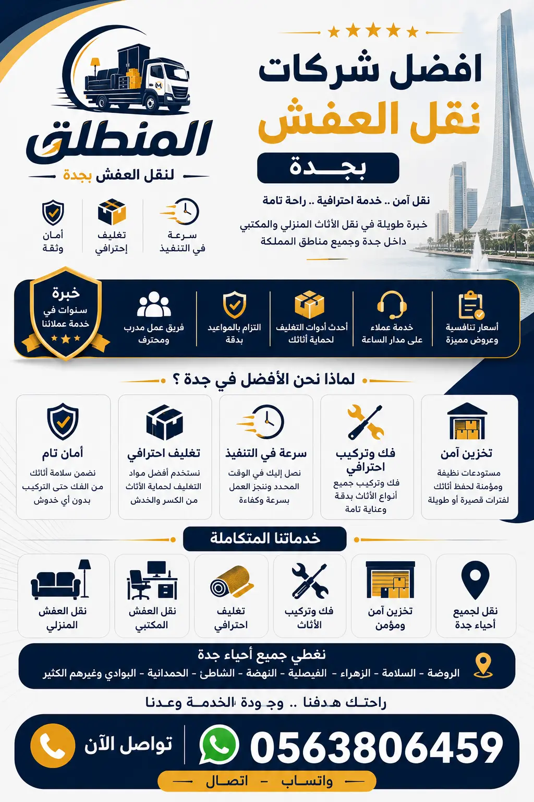

دليل افضل شركات نقل عفش بجدة: كيف تختار الشركة الأنسب لأثاث منزلك؟
تعد عملية الانتقال من منزل إلى آخر في مدينة متسارعة النمو ومترامية الأطراف مثل مدينة جدة خطوة محورية تتطلب تخطيطاً دقيقاً واعتماداً تاماً على افضل شركات نقل عفش بجدة. إن البحث عن خدمات نقل عفش بجدة لا يقتصر فقط على مجرد توفير سيارة ونقل الصناديق من موقع إلى آخر، بل يمتد ليشمل المنظومة الاحترافية المتكاملة التي تحافظ على سلامة ممتلكاتك، أجهزة المنزل الكهربائية، والأثاث الخشبي الثمين من أي تلف أو خدش قد يطرأ خلال عملية التحميل والتنزيل عبر السلالم والممرات الضيقة.
عندما تتطلع إلى اختيار أفضل شركات نقل العفش بجدة، فإن التجربة والسمعة الكبيرة التي تحظى بها الشركات تلعبان دوراً حاسماً في تصفية الخيارات. توفر لك شركة المنطلق للنقل والخدمات المسانذة بجدة حلولاً هندسية وعملية مدروسة تعتمد على تقسيم عملية النقل إلى مراحل محددة يبدأها الفنيون بالمعاينة والتخطيط ثم الفك الدقيق والتغليف الحراري والوقائي ومراحل التحميل في دينات مغلقة ومجهزة بأحزمة تثبيت، وصولاً إلى إعادة التركيب والتنسيق في المنزل الجديد بنفس الكفاءة والشكل الأصلي.
نحن نعلم جيداً في دليل خدمات المنطلق لنقل الأثاث أن طبيعة المباني في أحياء جدة تتفاوت بين الأبراج المرتفعة والفلل المستقلة والمباني الكلاسيكية. ولذلك فإن التسلح بأجهزة متطورة ومعدات ونش رفع هيدروليكية حديثة يمثل الفارق الجوهري بين افضل شركة نقل عفش بجدة والشركات العشوائية التي قد تتسبب في كوارث للأثاث. للاطلاع على المزيد حول خطوات التقييم والاختيار الصحيحة، يمكنك زيارة مقالنا حول كيف تختار شركة نقل عفش موثوقة.

معايير تقييم افضل شركات نقل عفش بجدة الموثوقة والمرخصة
لتضمن عدم التعرض للاحتيال أو المفاجآت غير السارة أثناء عملية نقل أثاث منزلك، توجد خمسة معايير ذهبية يجب الاعتماد عليها عند تصفية افضل شركات نقل عفش بجدة. أول هذه المعايير هو **الوجود الرسمي والترخيص**: يجب التأكد من أن الشركة تمتلك سجلاً تجارياً نفاذاً ومقراً معروفاً داخل جدة. ثانياً: **الخبرة الفنية لطاقم العمل**، إذ يجب أن تضم الشركة نجارين متخصصين وفنيي تكييف وعمالة مدربة على رفع الأحمال الثقيلة بحرفية تامة دون إلحاق أي ضرر بالجدران أو الأبواب.
المعيار الثالث يكمن في **استخدام مواد تغليف متعددة الطبقات** مثل البلاستيك الفقاعي المقوى والفوم والستريتش الحراري والكرتون المزدوج. إن شركة نقل عفش بجدة المعتمدة لا تساوم مطلقاً على جودة مواد التغليف لأنها خط الدفاع الأول لحماية المنقولات. رابع المعايير هو **امتلاك أسطول حديث من السيارات المغلقة (الدينات)** المجهزة خصيصاً من الداخل بممتصات للصدمات وحواجز خشبيّة ومثبتات لمنع انزلاق القطع أثناء السير في الطرقات.
أما المعيار الخامس والأهم فهو **تقديم ضمان كتابي وعقد رسمي** يوضح كافة الالتزامات والخدمات المطلوبة وتكلفتها النهائية الشاملة. تلتزم شركة المنطلق عبر قنوات التواصل الرسمية بتقديم هذه المعايير كاملة لعملائها، مما يحميك من التكاليف الخفية. لمزيد من النصائح المهمة حول تجنب الأخطاء الشائعة أثناء عملية النقل، نوصيك بمطالعة أبرز أخطاء نقل العفش بجدة وكيف تتجنبها.
لماذا تتصدر شركة المنطلق قائمة افضل شركات نقل عفش بجدة؟
تربعت شركة المنطلق لنقل العفش على عرش التميز لتصبح الاختيار الأول والأنسب لكل من يبحث عن افضل شركات نقل عفش بجدة. هذا التفوق لم يأتِ من فراغ، بل كان ثمرة أكثر من 10 سنوات من العمل الجاد والتطوير المستمر لكافة أدوات وأساليب العمل. تمتاز شركة المنطلق بتقديم باقة متكاملة من الخدمات التي تشمل الفك، التغليف، النقل، والتركيب، مع إمكانية توفير مستودعات آمنة ومجهزة إذا رغب العميل في تخزين الأثاث لفترات مؤقتة أو طويلة.
نحن ندرك في شركة المنطلق لنقل العفش بجدة أن كل قطعة أثاث تملك قيمة مادية وعاطفية خاصة لدى العميل. لذلك، يخضع جميع فنيي الشركة لبرامج تدريبية مكثفة تعنى بكيفية فك وتغليف غرف النوم المودرن والكلاسيكية، المطابخ الألومنيوم والخشبية، الأجهزة الكهربائية الحساسة، والشاشات الكبيرة. كما نوفر خدمة نقل العفش الشامل مع التغليف والضمان لضمان الراحة التامة لرب الأسرة دون أن يتحمل أي عناء أو مجهود.
إضافة إلى ذلك، فإن الانضباط الصارم بالمواعيد والشفافية المطلقة في تحديد أسعار الخدمة يعدان من السمات الرئيسية التي جعلت عملاءنا يمنحوننا أعلى التقييمات عبر المنصات المختلفة. يمكنك التعرف أكثر على فلسفتنا والخدمات المتنوعة التي نغطيها عبر تفقد مقاله المخصص عن أفضل شركة نقل عفش في جدة وأبرز مزاياها.
مقارنة شاملة بين افضل شركات نقل عفش بجدة والشركات غير المعتمدة
عند استعراض العروض المتاحة بالسوق، قد ينخدع البعض بأسعار منخفضة للغاية تقدمها عمالة سائبة أو مؤسسات غير مرخصة، دون إدراك المخاطر الجسيمة الناجمة عن هذا الخيار. إن المقارنة بين افضل شركات نقل عفش بجدة والشركات غير المعتمدة توضح الفوارق الجوهرية في مستوى الخدمة والاحترافية:
شركات نقل العفش المعتمدة (كالمنطلق)
- • تراخيص رسمية وسجل تجاري وعقود نفاذة.
- • فنيون ونجارون متخصصون ومكفولون على الشركة.
- • استخدام سيارات مغلقة ومجهزة لحماية الأثاث.
- • مواد تغليف حرارية وفوم متطورة عالية المقاومة.
- • تقديم ضمان شامل وتعويض عند أي خدش أو تلف.
- • أسعار ثابتة ومحددة بعقد مسبق بدون مفاجآت.
الشركات غير المرخصة والعمالة العشوائية
- • عدم وجود سجل رسمي أو عنوان ثابت وموثوق.
- • عمالة غير مدربة تفتقر لمهارات فك وتركيب الأثاث.
- • استخدام دينات مكشوفة تعرض العفش للأتربة والأمطار.
- • استخدام كرانيش أو كراتين ضعيفة ومستعملة.
- • غياب الضمان والتنصل التام عند حدوث أي كسور.
- • المطالبة برسوم إضافية مفاجئة أثناء عملية النقل.
إن اختيار التعامل مع مؤسسات نقل الأثاث المعتمدة بجدة هو الاستثمار الأضمن لحماية أثاثك وراحة بالك. للمزيد من التفاصيل، يمكنك مراجعة تقريرنا الخاص حول دليل شركات نقل الأثاث بجدة الموثوقة.
أسعار وتكاليف افضل شركات نقل عفش بجدة لعام 2026
يتساءل الكثير من العملاء عن كيفية احتساب أسعار النقل والتكلفة المتوقعة لنقل محتويات منازلهم. توضح افضل شركات نقل عفش بجدة أن أسعار نقل العفش ليست رقماً ثابتاً عشوائياً، بل تخضع لعدة عوامل رئيسية تشمل: حجم ونوع الأثاث، عدد الغرف المراد نقلها، عدد الأدوار في السكن القديم والجديد، ومدى الحاجة لخدمة الونش الهيدروليكي، بالإضافة إلى كميات مواد التغليف المطلوبة والمسافة بين الأحياء.
بشكل عام، تبدأ أسعار نقل الغرف البسيطة أو الشقق الصغير (1-2 غرفة) داخل نفس الحي في جدة من 250 إلى 450 ريال سعودي. بينما تتراوح تكلفة نقل الشقق المتوسطة (3-4 غرف) شاملة الفك والتغليف والتركيب بين 500 و 900 ريال. أما بالنسبة للفلل الكبيرة والقصور ذات الملحقات المتعددة، فتتراوح التكلفة بين 1200 و 2000 ريال سعودي حسب حجم العمل.
حرصاً من شركة المنطلق لنقل العفش بجدة على تقديم أفضل قيمة مقابل المال، نوفر خصومات دورية وتخفيضات تصل إلى 30% على الباقات الشاملة للنقل داخل وخارج جدة. اطلع على خطط التكاليف المفصلة لنقل القصور والفلل عبر رابط أسعار نقل عفش الفلل والقصور بجدة.
جدول أسعار ومقارنة خدمات افضل شركات نقل عفش بجدة
نقدم لك فيما يلي جدولي مقارنة توضيحيين يساعدانك في اتخاذ القرار المناسب بناءً على ميزانيتك واحتياجاتك الخاصة لنقل الأثاث في جدة:
أولاً: متوسط أسعار نقل العفش بجدة حسب نوع السكن (2026)
| نوع السكن / الشقة | الخدمة الشاملة (فك + تغليف + نقل + تركيب) | المعيار والعمالة المطلوبة | الوقت المتوقع |
|---|---|---|---|
| استوديو / غرفة واحدة | 250 - 350 ريال | 2 عمال + دينا صغيرة | 2 - 3 ساعات |
| شقة 2 - 3 غرف نوم | 450 - 650 ريال | 4 عمال + نجار + دينا كبيرة | 3 - 5 ساعات |
| شقة كبيرة 4 - 5 غرف | 700 - 950 ريال | 5 عمال + 2 نجارين + دينا جامبو | 5 - 7 ساعات |
| فيلا دورين / دوبلكس | 1200 - 1800 ريال | طاقم متكامل + ونش هيدروليكي + 2 دينا | يوم عمل كامل |
ثانياً: مقارنة المزايا بين المنطلق والشركات المنافسة
| وجه المقارنة | شركة المنطلق لنقل العفش | شركات السوق العادية |
|---|---|---|
| الخبرة في مجال نقل الأثاث | أكثر من 10 سنوات خبرة | من 1 إلى 3 سنوات |
| المعاينة الميدانية التخمينية | مجانية بدون أي رسوم | غير متوفرة أو مدفوعة |
| نوع سيارات النقل المستخدمة | دينات مغلقة ومبطنة بالكامل | سيارات مكشوفة أو قديمة |
| جودة مواد التغليف | بلاستيك فقاعي 5 طبقات + فوم | كرتون عادي خفيف |
| فنيو الفك والتركيب | نجارون وفنيو مكيفات محترفون | عمالة عامة غير متخصصة |
| ضمان سلامة الأثاث | عقد وثيقة ضمان شاملة 100% | لا يوجد أي ضمان |
خدمات التغليف الاحترافي المعتمدة لدى افضل شركات نقل عفش بجدة
التغليف الممتاز هو العمود الفقري الذي يعتمد عليه نجاح أي عملية نقل أثاث. تشتهر افضل شركات نقل عفش بجدة باستخدامها باقة من أجود مواد التغليف العالمية المصممة خصيصاً لمقاومة الظروف الجوية ورطوبة ساحل البحر الأحمر. في شركة المنطلق، نقوم بتصنيف المنقولات وحمايتها وفق خطة محكمة:
- تغليف الفقاقيع (Bubble Wrap): يُستخدم في حماية الأجهزة الإلكترونية والشاشات الذكية، التحف، والقطع الزجاجية الحساسة لمنع الصدمات.
- التغليف الكرتوني المقوى (Corrugated Boxes): صناديق كرتونية متعددة الطبقات لتعبئة الأدوات المنزلية، الملابس، وأدوات المطبخ مع وضع علامات إرشادية.
- الستريتش النايلون الحراري (Stretch Film): لف الكنب، المراتب، والقطع الإسفنجية لحمايتها من الأتربة والبقع والرطوبة أثناء الشحن.
- الفوم والشرائط اللاصقة المقواة: زوايا فوم لحماية أطراف الطاولات الخشبية والدواليب وزجاج المرايا من أي احتكاك.
للاطلاع على خدمة التغليف المخصصة من شركة المنطلق، تفضل بزيارة صفحة خدمات تغليف الأثاث بجدة، كما يمكنك قراءة مقالنا التعليمي حول الطرق الاحترافية لتغليف الأثاث المنزلي.
مهارات الفك والتركيب والتجميع لدى افضل شركات نقل عفش بجدة
لا تكتمل عملية النقل الناجحة إلا بوجود فريق متخصص يتقن أعمال الفك والتركيب لكافة أجزاء المنزل. تتفوق افضل شركات نقل عفش بجدة بتوظيف كادر من النجارين والفنيين الذين يمتلكون خبرة واسعة في فك وتركيب مختلف موديلات الأثاث المحلي والمستورد (مثل إيكيا، هوم بوكس، ميداس، والأثاث التركي والإيطالي).
تشمل خدماتنا الفنية المتخصصة:
- فك وتركيب غرف النوم بجدة فك الدواليب المعقدة والأسرة ووضع ترقيم دقيق لكل قطعة لضمان تركيبها بنفس الدقة.
- فك وتركيب المطابخ بجدة قص وتعديل الرخام الصناعي والمطابخ الألومنيوم والخشبية لتناسب المساحة الجديدة.
- فك وتركيب المكيفات بجدة فنيو تكييف محترفون لفك مكيفات السبلت والشباك واختبار الفريون وإعادة التركيب.
- تركيب النجف والستائر والتحف تعليق الشاشات الضخمة والستائر والبراقع والثرَيات بحرفية وأمان تام.
تعرف على كافة تفاصيل خدمات الفك والتركيب المتاحة لدينا عبر زيارة قسم خدمات الفك والتركيب بجدة وكذلك مقالنا في المدونة حول دليل فك وتركيب الأثاث المحترف بجدة.
دينات وأوناش الهيدروليك المستخدمة في افضل شركات نقل عفش بجدة
إن الامكانيات الآلية واللوجستية هي ما تميز افضل شركات نقل عفش بجدة وتمنحها الأفضلية في التعامل مع الحالات الصعبة والمباني المرتفعة. تمتلك شركة المنطلق أسطولاً كبيراً من الشاحنات والدينات المغلقة بأحجام مختلفة (دينات جامبو، دينات متوسطة، ودينات نقل صغيرة) مصممة خصيصاً لحماية العفش من الأمطار والأتربة أثناء التنقل بين الأحياء أو بين المدن.
علاوة على ذلك، تعد خدمة **الونش الهيدروليكي الحديث** الحل الأمثل لمشكلة المباني المرتفعة أو المباني ذات السلالم الضيقة. حيث يسمح الونش بنقل وحمل القطع الثقيلة الضخمة كالكنب الفاخر، الثلاجات والمطابخ، والأجهزة الكبيرة مباشرة من وإلى نوافذ أو بلكونات الأدوار العليا (حتى الدور الـ 15) في وقت قياسي وبأمان تام دون احتمال وقوع أي خدش.
اطلع على تفاصيل مواصفات السيارات وأسطول النقل الخاص بنا في مقالنا الشامل حول دينات ونش نقل العفش بجدة ومواصفاتها.
تغطية شاملة لأحياء جدة عبر افضل شركات نقل عفش بجدة
تتميز افضل شركات نقل عفش بجدة بامتلاكها شبكة تغطية جغرافية واسعة تنتشر في كافة مناطق وأحياء جدة الشمالية والجنوبية والشرقية والوسطى. تضمن شركة المنطلق التواجد السريع وسرعة الاستجابة لطلبات العملاء أينما كانوا داخل عروس البحر الأحمر.
كما تمتد خدماتنا لنقل الأثاث والعفش من جدة إلى كافة مدن المملكة ومناطقها مثل نقل عفش من جدة إلى الرياض، ونقل عفش من جدة إلى مكة، ونقل عفش من جدة إلى المدينة المنورة بأسطول شاحنات مجهز بالكامل.
تجنب مخاطر التعامل مع شركات نقل عفش وهمية وغير مرخصة بجدة
مع انتشار الوسائل الإعلانية العشوائية، تظهر في بعض الأحيان إعلانات تروج لخدمات نقل أثاث بأسعار زهيدة للغاية غير واقعية. تحذر افضل شركات نقل عفش بجدة من الانخداع وراء هذه العروض الوهمية، حيث غالباً ما تؤدي إلى عواقب وخيمة مثل تلف الأثاث، فقدان الأغراض الثمينة، أو المساومة ودفع مبالغ مالية إضافية ضخمة تحت تهديد ترك العفش في الشارع.
لتجنب الوقوع في فخ هذه الشركات:
- احرص دائماً على طلب زيارة معاينة ميدانية لممثل الشركة قبل الاتفاق.
- تأكد من وجود عقد خدمة رسمي مختوم يحتوي على كافة الخدمات والأسعار بالتفصيل.
- لا تدفع كامل المبلغ مقدماً، واجعل جزءاً من المستحقات بعد اتمام عملية التركيب والمعاينة في المنزل الجديد.
- تأكد من وجود أرقام تواصل ثابتة وهواتف رسمية تابعة للمؤسسة.
في شركة المنطلق عبر مكتبنا وقنواتنا الرسمية، نضمن لك الشفافية التامة والاحترافية المطلقة التي تجعلك في أمان كامل طوال مراحل عملية النقل.
خطوات نقل الأثاث الخالي من الإجهاد مع افضل شركات نقل عفش بجدة
لتضمن تجربة نقل مريحة ومنظمة وخالية تماماً من الضغوط والإجهاد النفسي، تنصحك افضل شركات نقل عفش بجدة باتباع الجدول الزمني والتنظيمي التالي:
قبل موعد النقل بأسبوعين: التخلص من الزوائد والحجز
قم بفرز محتويات منزلك والتخلص من الأغراض التالفة، وتواصل مع شركة المنطلق لحجز الموعد والمعاينة الميدانية.
قبل الموعد بـ 3 أيام: حفظ الممتلكات الشخصية والوثائق
احفظ الذهب، المستندات الرسمية، والمبالغ المالية في حقائب خاصة بك ولا تضعها ضمن كراتين العفش العام.
يوم النقل: الإشراف وتوجيه الفريق
يقوم فريق المنطلق بفك الأثاث وتغليفه وتحميله في الدينات المغلقة ونقله فوراً للمنزل الجديد وتثبيته حسب توجيهاتك.
نقدم خدمات متخصصة لكافة المنشآت بما فيها نقل العفش السكني بجدة، ونقل عفش الفلل بجدة، ونقل أثاث الشركات والمكاتب بجدة.
آراء وتجارب العملاء الحقيقية مع افضل شركات نقل عفش بجدة
نفتخر في شركة المنطلق بحصولنا على تقييم 4.9 من 5 بناءً على أكثر من 480 رأياً وتجربة حقيقية لعملائنا في مختلف أحياء جدة. إليك بعض ما قاله عملاؤنا الكرام:
أبو فهد الجحدلي
حي الشاطئ - نقل فيلا دورين
"تجربتي مع شركة المنطلق كانت ممتازة جداً. تعاملت معهم لنقل عفش فيلا كاملة من حي الشاطئ إلى أبحر. التزموا بالميعاد بدقة، والتغليف بالفقاقيع كان احترافياً، والنجارون فكوا وركبوا غرفة النوم الإيكيا والمطبخ بدون أي تلف. فعلاً هم افضل شركة نقل عفش بجدة."
عميل موثّقد. سارة الغامدي
حي الروضة - نقل شقة 4 غرف
"شركة محترفة وأسعارهم واضحة ومحددة بدون استغلال. استخدموا الونش الهيدروليكي لتنزيل الكنب الثقيل من الدور الرابع بحرفية عالية جداً. أشكر الإدارة والعمال على حسن التعامل."
عميل موثّقم. خالد العتيبي
حي الحمدانية - نقل مكتب تجاري
"نقلنا أثاث وأجهزة الشركة بالكامل مع المنطلق. السرعة والانضباط كانوا فوق المتوقع، ولم تتأثر حركة العمل لدينا. بالتأكيد سأكرر التعامل معهم وأوصي بهم لكل من يبحث عن افضل شركات نقل العفش بجدة."
عميل موثّقأم عبد العزيز
حي الصفا - نقل شقة سكنية
"العمال محترمون جداً ومؤدبون وحريصون على كل زجاجة وكل تحفة في البيت. التغليف ممتاز والسيارات مغلقة ونظيفة جداً. يعطيهم العافية شغل يبيض الوجه."
عميل موثّققائمة التحقق (Checklist) الذهبية لاختيار افضل شركات نقل عفش بجدة
استعن بهذة القائمة المرجعية قبل توقيع العقد أو حجز الخدمة للتأكد من اختيار أفضل شركة نقل عفش بجدة تضمن لك الأمان والتكامل:
الأسئلة الشائعة حول افضل شركات نقل عفش بجدة (16 سؤال وجواب تفصيلي)
1. ما هي أفضل شركة نقل عفش بجدة مجربة ومضمونة؟
تعتبر شركة المنطلق لنقل العفش بجدة أفضل شركة نقل عفش بجدة، بفضل خبرتها الطويلة، واعتمادها على عمالة فنية مدربة، وتوفير دينات مغلقة وأوناش هيدروليكية مع تقديم ضمان كامل ومكتوب على سلامة المنقولات.
2. كيف يمكنني تصفية واختيار افضل شركات نقل عفش بجدة؟
يتم التقييم بناءً على السجل التجاري الرسمي، وجود مقر معروف، التقييمات الإيجابية السابقة، وضوح التكلفة في العقد، وشمولية الخدمات مثل التغليف الاحترافي والفك والتركيب.
3. ما هي أسعار نقل العفش بجدة لدى أفضل الشركات؟
تتراوح تكلفة النقل بين 250 ريال للغرف المحدودة و 1800 ريال للفلل الكبيرة. تواصل مع شركة المنطلق عبر صفحة دليل أسعار نقل العفش بجدة للحصول على عرض سعر دقيق ومجاني.
4. هل توفر افضل شركات نقل عفش بجدة خدمة الفك والتركيب للمكيفات والمطابخ؟
نعم، تشمل خدماتنا توفير نجارين وفنيي تكييف متخصصين في فك وتركيب المكيفات بجدة ونقل وفك وتعديل المطابخ بجدة.
5. هل تقدم شركات نقل العفش بجدة ضماناً وثيقة تعويض؟
تمنحك شركة المنطلق عقد خدمة رسمي يتضمن وثيقة ضمان كاملة تتعهد بصيانة أو تعويض العميل عن أي خدش أو كسر قد يحدث لأي قطعة أثناء عمليتي النقل والتركيب.
6. ما هي مواد التغليف التي تستخدمها افضل شركات نقل عفش بجدة؟
نستخدم البلاستيك الفقاعي 5 طبقات، الفوم، الستريتش الحراري، والكرتون المموج. تفقد المزيد في قسم نقل العفش مع التغليف والضمان.
7. هل يوجد ونش رفع أثاث هيدروليكي لدى شركات نقل العفش بجدة؟
نعم، تتوفر لدينا أوناش رفع هيدروليكية حديثة تصل حتى الأدوار العليا لنقل المنقولات الضخمة من النوافذ الخارجية بأمان.
8. كم من الوقت تستغرق عملية نقل العفش داخل أحياء جدة؟
تستغرق العملية لشقة متوسطة من 3 إلى 5 ساعات شاملة الفك والتغليف والنقل والتركيب بفضل توزيع المهام بدقة بين أفراد الفريق.
9. كيف تتجنب الوقوع في فخ شركات نقل العفش الوهمية بجدة؟
تجنب التعامل مع العمالة غير المرخصة واطلب دائماً معاينة ميدانية وعقداً رسمياً مبرماً مع شركة لها مقر معروف وسجل تجاري.
10. هل تشمل الخدمات نقل الأجهزة الكهربائية والشاشات الكبيرة؟
نعم، يتم تغليف الثلاجات والشاشات بفوم عازل وصناديق مدعمة لحمايتها من الارتجاجات والخدوش أثناء السير.
11. هل توفر افضل شركات نقل عفش بجدة خدمة التخزين لفترات طويلة؟
نعم، نوفر مستودعات تخزين مؤمنة ومراقبة بالكاميرات ومجهزة بأحدث أنظمة السلامة عبر قسم تخزين الأثاث بجدة.
12. هل تختلف تكلفة نقل العفش بين الأحياء الشمالية والجنوبية بجدة؟
التكلفة تعتمد بشكل أساسي على حجم الأثاث والخدمات المطلوبة، بينما مسافة التنقل داخل جدة تؤثر بشكل طفيف جداً في قيمة السعر النهائي.
13. متى ينصح بحجز موعد مع شركة نقل العفش بجدة؟
يفضل الحجز قبل النقل بـ 3 إلى 5 أيام لترتيب خطة المعاينة، كما نوفر خدمة النقل السريع في الحالات الطارئة خلال 24 ساعة.
14. كيف يتم التعامل مع الأثاث الثمين والتحف والزجاج؟
يتم تغليف القطع الثمينة والزجاجية بأربع طبقات وقائية ووضعها في صناديق خاصة مدعمة بالفوم مع تثبيتها بعناية داخل دينا النقل.
15. هل يتم ترتيب العفش وتجميعه في البيت الجديد؟
بالتأكيد، تشمل خدماتنا إعادة تركيب غرف النوم والمطابخ والستائر وتوزيع الصناديق في الغرف المخصصة حسب رغبة العميل.
16. ما هي أرقام التواصل مع افضل شركات نقل عفش بجدة؟
يمكنك التواصل الفوري مع شركة المنطلق عبر الاتصال بالرقم 0563806459 أو المراسلة عبر الواتساب 966563806459 للاستفسار وحجز المعاينة المجانية.
اختر أفضل شركة نقل عفش بجدة – شركة المنطلق
احصل الآن على الخدمة المتكاملة لنقل أثاث منزلك بجدة مع الضمان الشامل بأفضل الأسعار التنافسية. فريقنا في انتظار اتصالاتكم على مدار 24 ساعة.